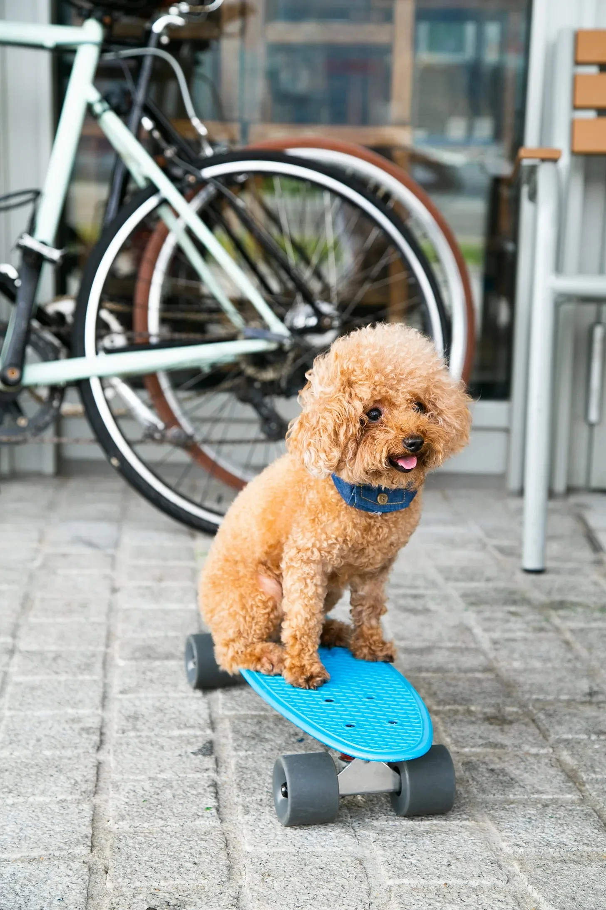

처음 그 일이 일어났을 때, 나는 헨더슨 부인의 지나치게 꾸민 푸들 피피를 바라보고 있었다. 거품 같은 털 뭉치가 끊임없이 짖어대자, 나는 생각했다. “저 아이는 쓰다듬을 받고 싶은 거야.“
갑자기 세상이 바뀌었다. 공원은 사라지고, 갓 깎은 잔디, 헨더슨 부인의 향수 냄새, 그리고… 다른 개들의 톡 쏘는 냄새 등, 다채로운 향기로 가득 찼다. 내 다리는 짧아졌고, 시야는 땅에 가까워졌다. 갓 다듬어진 털이 피부에 닿는 느낌이 들었다.
나는 피피였다.
공황 상태가 밀려왔다가 순식간에 사라졌다. 매혹적이었다. 나는 피피의 관점에서 세상을 보았다. 우뚝 솟은 인간의 다리, 그녀의 모든 발걸음을 이끄는 흥미로운 냄새, 다람쥐를 쫓는 단순한 기쁨.
그 경험은 찰나였고, 나는 공원 벤치에 숨이 막힌 채 앉아서 이제는 익숙해진 푸들을 경외심과 당혹감이 뒤섞인 눈으로 바라보았다.
그 일은 몇 주 동안 다시 일어나지 않았다. 그러다 어느 날, 오빠와 말다툼을 하던 중, 나는 그의 좌절감, 분노, 끓어오르는 화에 휩싸였다. 나는 그의 눈을 통해 나 자신을 보았다. 고집스럽고, 화나게 하고, 항상 옳다고 생각하는 나를. 그 경험은 막 시작된 것처럼 갑자기 끝났고, 나는 할 말을 잃고 부끄러워졌다.
그 능력, 만약 그것이 능력이라면, 종종 나를 향한 강렬한 감정에 의해 유발되는 것 같았다. 나는 내가 무시했던 노숙자, 내가 무례하게 굴었던 계산원, 내가 의도치 않게 상처를 준 친구의 눈을 통해 세상을 보았다. 각각의 엿보기는 내 결점과 내가 다른 사람들에게 미치는 영향을 드러내는, 배를 강타하는 것 같았다.
항상 부정적인 것은 아니었다. 어린 스케이트보더가 어려운 기술을 성공했을 때의 희열, 노부부가 일몰을 바라보는 조용한 만족감, 어머니가 갓 태어난 아기를 바라보는 순수한 사랑을 공유했다.
나의 세계는 확장되었고, 나의 공감 능력은 깊어졌다. 나는 주변 사람들의 감정을 예민하게 알아차리고, 그들의 필요를 예측하고, 그들의 관점을 이해하게 되었다. 그것은 지치면서도 짜릿했다. 나는 더 이상 단지 나 자신이 아니었다. 나는 통로였고, 인간 경험의 만화경을 목격하는 증인이었다.
어느 날, 도시를 걷다가, 너무나 깊은 슬픔의 파도에 휩싸여 무릎을 꿇었다. 나는 희미하게 불이 켜진 아파트에 앉아, 추억과 잃어버린 사랑하는 사람들의 유령에 둘러싸인, 늙고 허약하고 혼자인 여성이었다. 그녀의 외로움은 분명히 실재하는 것이었고, 나를 짓누르고 숨을 막히게 했다.
내 자신으로 돌아왔을 때, 눈물이 얼굴을 타고 흘러내렸다. 나는 내가 무엇을 해야 할지 알았다.
나는 그녀, 내 비전 속의 여성을 찾았다. 그녀는 보조금을 받는 주택 단지에 살고 있었다. 우리는 이야기를 나누고, 웃고, 이야기를 공유했다. 나는 정기적으로 방문하며 그녀의 외로운 세상에 빛과 웃음을 가져왔다.
그녀는 내가 그녀의 눈을 통해 세상을 보았고, 그녀의 고독의 무게를 느꼈다는 것을 결코 알지 못했다. 하지만 그것은 중요하지 않았다. 나는 그랬다. 그리고 이상하고도 멋진 능력에서 비롯된 그 연결은 우리 둘의 삶을 더 좋게 바꾸어 놓았다.
The first time it happened, I was staring at Mrs. Henderson’s overly-coiffed poodle, Fifi. The frothy mass of fur yipped incessantly, and I found myself thinking, "I bet she just wants a good scratch behind the ears.”
Suddenly, the world shifted. The park faded away, replaced by a kaleidoscope of scents: freshly cut grass, the lingering aroma of Mrs. Henderson’s perfume, the pungent tang of… well, other dogs. My legs were short, my vision close to the ground. I felt the prickle of freshly trimmed fur against my skin.
I was Fifi.
Panic surged, then subsided as quickly as it came. It was fascinating. I saw the world from Fifi’s perspective – the towering legs of humans, the intriguing smells that guided her every step, the simple joy of chasing squirrels.
The experience was fleeting, leaving me breathless on the park bench, staring at the now-familiar poodle with a mixture of awe and bewilderment.
It didn’t happen again for weeks. Then, one day, while arguing with my brother, I was engulfed by his frustration, his resentment, his simmering anger. I saw myself through his eyes – stubborn, infuriating, always right. The experience ended as abruptly as it began, leaving me speechless and ashamed.
The ability, if that’s what it was, seemed triggered by intense emotions, often directed at me. I saw the world through the eyes of a homeless man I’d ignored, a cashier I’d been rude to, a friend I’d unintentionally hurt. Each glimpse was a punch to the gut, revealing my flaws and the impact I had on others.
It wasn’t always negative. I shared the exhilaration of a young skater nailing a difficult trick, the quiet contentment of an elderly couple watching the sunset, the pure love of a mother gazing at her newborn.
My world expanded, my empathy deepened. I became hyper-aware of the emotions of those around me, anticipating their needs, understanding their perspectives. It was exhausting, yet exhilarating. I was no longer just me; I was a conduit, a witness to the kaleidoscope of human experience.
One day, walking through the city, I was overwhelmed by a wave of sorrow so profound it brought me to my knees. I was an old woman, frail and alone, sitting in a dimly lit apartment, surrounded by memories and the ghosts of loved ones lost. Her loneliness was a tangible thing, pressing down on me, suffocating me.
When I came back to myself, tears streamed down my face. I knew what I had to do.
I found her, the woman from my vision, living in a subsidized housing complex. We talked, we laughed, we shared stories. I became a regular visitor, bringing light and laughter into her lonely world.
She never knew I’d seen through her eyes, that I’d felt the crushing weight of her solitude. But it didn’t matter. I had. And that connection, born from a strange and wonderful ability, had changed both our lives for the better.